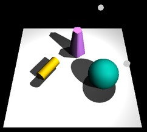

The Previous Section introduced three.js, an API for 3D Web Graphics, and showed how to use it for basic 3D graphics. This section will cover some of the more advanced features of three.js—many of which we were not able to program in OpenGL 1.0.
We start with a simple example: anaglyph stereo. Anaglyph refers to 3D images that are meant to be viewed through red/cyan (or red/green or red/blue) glasses. The image contains two copies of the scene, one as viewed from the left eye drawn using only red, and one as viewed from the right eye, drawn using only green and blue. When the image is viewed through red/cyan glasses, the left eye sees only the left-eye view of the scene and the right eye sees only the right-eye view of the scene. The result is what looks like a real 3D scene, with depth perception. The result isn't perfect, because screen colors and the color filters in the glasses aren't perfect. You will see some "ghosts," where part of the left-eye image gets through to the right eye or vice versa. Anaglyph stereo works pretty well for monochrome images that contain only shades of gray. In the example shown here, all the objects are white. Color images are more problematic. There are several ways of separating the colors into left and right-eye images, none of them perfect. The one used in three.js works pretty well except for shades of red.
Anaglyph stereo in three.js is done by the class THREE.AnaglyphEffect. This class is not defined in the core three.js JavaScript file; it's defined in a separate file named AnaglyphEffect.js, which can be found in the three.js download in the folder examples/src/effects.
It is very easy to use. The constructor for an object of type THREE.AnaglyphEffect takes an ordinary WebGLRenderer as a parameter. I have found that is also necessary to call the object's setSize method in order to make it work. Here, theCanvas is a reference to the <canvas> element where the image will be drawn:
anaglyphRenderer = new THREE.AnaglyphEffect( renderer ); anaglyphRenderer.setSize( theCanvas.width, theCanvas.height );
Once you have the AnaglyphEffect, you use it in place of the WebGLRenderer to render the image:
function render() {
anaglyphRenderer.render( scene, camera );
}
That's all there is to it! The scene will be rendered in anaglyph stereo. For an example, see bouncing-balls-anaglyph.html. This is a modified version of an example from the previous section, bouncing-balls-threejs.html, that shows randomly colored balls bouncing inside a wireframe cube. The new version uses AnaglyphEffect for stereo viewing. In addition, an option has been added to draw white balls rather than randomly colored balls. The above image is from this program.
A mesh object consists of a collection of polygonal faces, each face having a list of vertices. There are several ways to represent meshes. The one used in three.js is basically the representation known as Indexed Face Sets (IFS).
An indexed face set representation of an object consists of a list of vertices, containing all the vertices that occur in the object, together with a list of faces. A face is represented as a list of indices into the vertex array. That is, each vertex in the face is represented as an integer giving the position of that vertex in the list of vertices, rather than by giving the coordinates of the vertex directly. This means that the coordinates of the vertex are stored only once and are not repeated for each face in which the vertex occurs. Since a given vertex is generally shared by several faces of the mesh, the IFS representation generally uses less memory over the alternative of repeating the coordinates for each vertex in each face.
For a THREE.Geometry object, geom, the property geom.vertices is an array containing the vertices of the object, where each vertex is an object of type THREE.Vector3. For a mesh geometry (as opposed to a line geometry), the property geom.faces is an array of faces. A face in three.js is an object of type THREE.Face3, for a triangle, or THREE.Face4, for a quad. (A quad is a four-sided polygon.) Three.js does not support polygonal faces with more than four sides. A triangular face is created from three integers that are indices into the vertex array:
f = new Face3( a, b, c ); // indices are stored as properties f.a, f.b, f.c
and a quad from four integral indices:
f = new Face4( a, b, c, d ); // indices are stored as f.a, f.b, f.c, f.d
As an example, let's see how to directly create a three.js geometry for this pyramid:
var pyramidGeom = new THREE.Geometry();
pyramidGeom.vertices = [ // array of Vector3 giving vertex coordinates
new THREE.Vector3( 1, 0, 1 ), // vertex number 0
new THREE.Vector3( 1, 0, -1 ), // vertex number 1
new THREE.Vector3( -1, 0, -1 ), // vertex number 2
new THREE.Vector3( -1, 0, 1 ), // vertex number 3
new THREE.Vector3( 0, 1, 0 ) // vertex number 4
];
pyramidGeom.faces = [
new THREE.Face4( 3, 2, 1, 0), // bottom face is a quad
new THREE.Face3( 3, 0, 4), // remaining faces are triangles
new THREE.Face3( 0, 1, 4),
new THREE.Face3( 1, 2, 4),
new THREE.Face3( 2, 3, 4)
];
Note that the order of the vertices on a face is not completely arbitrary: They should be listed in counterclockwise order as seen from in in front of the face, that is, looking at the face from the outside of the pyramid.
This pyramid geometry as given will work with a MeshBasicMaterial, but to work with lit materials such as MeshLambertMaterial or MashPhongMaterial, the geometry needs normal vectors. It is possible to assign the normal vectors by hand, but you can also have three.js compute them for you by calling methods in the geometry class:
pyramidGeom.computeFaceNormals(); pyramidGeom.computeVertexNormals();
The first method, computeFaceNormals, computes one normal vector for each face, where the normal is perpendicular to that face. It's suitable for flat, faceted shading. The second method computes a normal vector for each vertex, obtained by averaging the face normals of all faces that share that vertex. These vertex normals are used for smooth shading. Note that you must call computeFaceNormals before computeVertexNormals. If you fail to call at least the first of these methods, Phong and Lambert materials will appear black.
To display my pyramid, I might want to use a MeshFaceMaterial to assign a different color to each face. For that to work, each face needs a materialIndex, a property of the face that is an integer value giving an index into the array of materials in the MeshFaceMaterial. In this case, I might assign the material index for each face to be the same as the face number:
for (var i = 0; i < pyramidGeom.faces.length; i++) {
pyramidGeom.faces[i].materialIndex = i;
}
To see the pyramid used in an example with five differently colored faces, see the example file pyramidIFS.html.
There is another way to assign a different color to each face of a mesh object: It is possible to store the colors in the face objects inside the geometry. (You also have to tell the material to use those colors.)
There are several ways that color might be assigned to meshes. One is to simply make each face a different solid color. Each face object has a color property to be used to implement this idea. The value of the color property is an object of type THREE.Color. For example, we could set the face colors of the pyramid with
pyramidGeom.faces[0].color = new THREE.Color(0xCCCCCC);
pyramidGeom.faces[1].color = new THREE.Color("green");
pyramidGeom.faces[2].color = new THREE.Color("blue");
pyramidGeom.faces[3].color = new THREE.Color("yellow");
pyramidGeom.faces[4].color = new THREE.Color("red");
To use these colors, the vertexColors property of the material must be set to the value THREE.FaceColors; for example:
material = new THREE.MeshLambertMaterial({
vertexColors: THREE.FaceColors,
shading: THREE.FlatShading
});
The default value of this property is THREE.NoColors, which tells the renderer to use the material's color property for every face of the geometry to which it is applied.
A second way to apply color to a face is to apply a different color to each vertex of the face. WebGL will then blend the vertex colors to assign color to pixels inside the face. Each face object has a property named vertexColors whose value should be an array of THREE.Color objects, one for each vertex of the face. To use these colors, the vertexColors property of the material should be set to THREE.VertexColors.
The sample program vertex-and-color-animation.html shows how to use face colors and face vertex colors. It also has the option of using vertex colors where the color of a shared vertex set to be the same on all faces that share that vertex. This example also shows how to animate colors and vertex coordinates. The above picture is from this example.
We are not finished yet with mesh objects: There is still the question of how to add textures. The picture at the right shows our example pyramid with a brick texture. In order to apply a texture image to an object, WebGL needs texture coordinates for that object. When we build a mesh from scratch, we have to supply the texture coordinates as part of the mesh's geometry object.
A geometry object such as pyramidGeom in the example has a property named faceVertexUvs to hold texture coordinates. ("UV" refers to the coordinates on an object that are mapped to the st coordinates in a texture.) The value of faceVertexUvs is an array, where each element of the array is itself an array of arrays; in practice only the element faceVertexUvs[0] is used; it is an array with one element for each face in the geometry. The data stored for the face is an array of texture coordinates, one pair of coordinates for each vertex of the face. Finally, each pair of texture coordinates in the array is stored as an object of type THREE.Vector2.
Let's go back to the pyramid example. For the quad that is the base of the pyramid, we need an array of four sets of texture coordinates. To map the full texture image onto the base, we can use texture coordinates (0,0), (1,0), (1,1), and (1,0). Represented as an array of Vector2 objects, this is:
var bottomUV = [
new THREE.Vector2(0,0), new THREE.Vector2(0,1),
new THREE.Vector2(1,1), new THREE.Vector2(1,0)
];
For each of the triangular faces, we might cut a triangle out of the texture by using texture coordinates (0,0), (1,0), and (0.5,0):
var sideUV = [
new THREE.Vector2(0,0), new THREE.Vector2(1,0), new THREE.Vector2(0.5,1)
];
We can use the same set of uv-coordinates for all four triangular faces. The texture coordinates for the five faces of the pyramid geometry have to be stored in an array that is the value of pyramidGeom.faceVertexUvs[0]. We can accomplish that by
pyramidGeom.faceVertexUvs[0] = [ bottomUV, sideUV, sideUV, sideUV, sideUV ]
or, alternatively,
pyramidGeom.faceVertexUvs = [[ bottomUV, sideUV, sideUV, sideUV, sideUV ]];
One more way to accomplish the same thing, in a style that I've seen in on-line examples, is to push the coordinate arrays onto the array pyramidGeom.faceVertexUvs[0]:
pyramidGeom.faceVertexUvs[0].push(bottomUV);
for (var i = 0; i < 4; i++) {
pyramidGeom.faceVertexUvs[0].push(sideUV);
}
You can see the pyramid with a texture applied in the sample program pyramidIFS-textured.html. (When working on this example, I discovered that if you apply a texture to a geometry, geom, for the first time after the object has already been rendered, then you need to set both
geom.uvsNeedUpdate = true; geom.buffersNeedUpdate = true;
Otherwise, a WebGL error will occur when the newly-textured object is rendered.)
Although it is possible to create mesh objects by listing their vertices and faces, it would be difficult to do it by hand for all but very simple objects. It's much easier, for example, to design an object in Blender. Three.js makes it possible to load object descriptions from files, and it comes with scripts that can be used to export objects designed in Blender—and other 3D modeling programs—to a file format that three.js can read.
Three.js has its own object file format, in which the objects are specified using JSON (JavaScript Object Notation). This is the file format that is produced by the three.js export scripts. The class THREE.JSONLoader can be used to read object descriptions from such files. The three.js download includes some other loaders (in the examples/js folder) that can work with other file formats, but I will only discuss JSONLoader here.
If loader is an object of type THREE.JSONLoader, use its load() method to start the process of loading a model:
loader.load( url, callback );
The first parameter is a url for the file that contains the model. It can be the name of a file in the same directory as the html file on which it is used or a relative url to a file in a directory on the same server. JSON models are stored as actual JavaScript code, so the file will have a name ending in ".js". The second parameter, callback, is the name of a function that will be called when the loading is done. The loading is asynchronous; loader.load() starts the process and returns immediately. It is the responsibility of the callback function to use the data from the file to create a three.js object and add it to the scene. The callback function takes two parameters, geometry and materials, which contain the information needed to create the object; the parameters represent the data that has been read from the file. The materials parameter is an array of materials meant to be used with the material type THREE.MeshFaceMaterial. This allows different parts of the model to have different materials. (Of course, you could just use your own material on the geometry instead of the material from the file.)
Here, then, is a pair of functions that could be used to load a JSON model from a specified url and add it to the scene (although in general, you probably want to do something more complicated with the object):
function loadModel( url ) { // Call this function to load the model.
var loader = new THREE.JSONLoader();
loader.load( url, modelLoaded ); // Start load, call modelLoaded when done.
}
function modelLoaded( geometry, materials ) { // callback function for JSON loader
var mat = new THREE.MeshFaceMaterial(materials);
var object = new THREE.Mesh( geometry, mat );
scene.add(object);
render(); // (only need this if there is no animation running)
}
The sample program json-loader-demo.html uses JSONLoader to read object descriptions. It can display seven different objects, the first two of which I exported from Blender. The other objects came in the three.js download.
A JSON model can use image textures. The image files should be in the same folder as the file that contains the model. The last example, in the demo, monster.js, uses an image texture. In the demo, the monster initially shows up as black because the texture image files have not been loaded when the callback function is called. Pressing an arrow key will cause the object to be rendered again, with the texture, once the image has loaded.
I'll also mention that JSON models can define simple keyframe animations. To do this, the file includes alternative sets of vertices for each keyframe (three.js calls them "morph targets"). However, it requires more coding to show the animation, and you will have to research that yourself if you want to try it.
 Shadows can add a nice touch of realism to a scene, but OpenGL can't generate shadows automatically. There are ways to compute shadows that can be implemented in OpenGL, but they are tricky to use and they are not really physically realistic. The method is called shadow mapping, and three.js makes it fairly easy to use.
The basic idea of shadow mapping is fairly straightforward: To tell what parts of a scene are in shadow, you have to look at the scene from the point of view of the light source. Things that are visible from the point of view of the light are illuminated by that light. Things that are not visible from the light are in shadow. (This is ignoring the possibility of transparency and indirect, reflected light.) To implement this idea, place a camera at the light source and take a picture. In fact, you don't need the picture. What you need is the depth buffer. After the picture has been rendered, the value stored in the depth buffer for a given pixel contains, essentially, the distance from the light to the object that is visible, and hence illuminated, from the point of view of the light at that pixel. If an object is at greater depth than the value stored in the depth buffer, than that object is in shadow. The depth buffer is the shadow map. Now, go back to the point of view of a viewer, and consider a point on some object as it is rendered from that point of view. Is that point in shadow or not? You just have to transform that point to the light's viewing coordinates and check the depth of the transformed point. If that depth is greater than the corresponding shadow map value, then the point is in shadow. (Note that if there are several lights, each light casts its own shadows, and you need a shadow map for each light.)
It is computationally expensive to compute shadow maps and to apply them, and shadows are disabled by default in three.js. To get shadows, you need to do several things. You need to enable shadow computations in the WebGL renderer by saying
renderer.shadowMapEnabled = true;
Only DirectionalLights and SpotLights can cast shadows in three.js. To get shadows from a light, even after enabling shadows in the renderer, you have to set the light's castShadow property to true:
light.castShadow = true; // This light will cast shadows.
Furthermore, shadows have to be enabled for each object that will cast or receive shadows. ("Receiving" a shadow means that shadows will be visible on that object. Casting and receiving are enabled separately for each object; an object can cast shadows but not receive them and vice-versa.
object.castShadow; // this object will cast shadows object.receiveShadow; // shadows will show up on this object
(Note: I have found that objects that receive shadow don't get rendered at all if there are no lights that cast shadows!)
Even this might not make any shadows show up, and if they do they might look pretty bad. The problem is that you usually have to configure the cameras that are used to make the shadow maps.
Each DirectionalLight or SpotLight has its own shadow camera, which is used to create the shadow map from the point of view of that light. The shadow camera for a directional light uses an orthogonal projection that is configured by view volume limits xmin, xmax, ymin, ymax, near, and far. For a directional light dl, these limits correspond to the properties dl.shadowCameraLeft, dl.shadowCameraRight, dl.shadowCameraBottom, dl.shadowCameraTop, dl.shadowCameraNear, and dl.shadowCameraFar. These values are relative to dl.position. It is important to make sure that all the objects in your scene, or at least those that cast shadows, are within the view volume of the shadow camera. Furthermore, you don't want the limits to be too big: If the scene occupies only a small part of the camera's view volume, then only a small part of the shadow map will contain useful information—and since there is so little information about shadows, your shadows won't be very accurate. The default values are set for a very large scene. For a relatively small scene, you might set:
dl.shadowCameraLeft = -20; dl.shadowCameraRight = 20; dl.shadowCameraBottom = -20; dl.shadowCameraTop = 20; dl.shadowCameraNear = 1; dl.shadowCameraFar = 30;
The shadow camera for a spotlight uses a perspective projection. (The use of a camera with a limited view is why you can have shadows from spotlights but not from point lights.) For a spotlight sl, the shadow camera is configured by the properties sl.shadowCameraNear, dl.shadowCameraFar, and dl.shadowCameraFov (where "fov" is the vertical field of view angle, given in degrees rather than radians). The default value for fov is probably OK, except that if you change the spotlight's cutoff angle, you will want to change the fov to match. But you should be sure to set appropriate values for near and far, to include all of your scene and as little extra as is practical. Again, near and far are distances from sl.position.
Both types of light have a shadowDarkness property, with a value between 0 and 1, that determines how dark the shadows are. The default value, 0.5, gives fairly light shadows, and you might want to increase it. Finally, you might want to increase the size of the shadow map. The shadow map is a kind of texture image which by default is 512 by 512 pixels. You can increase the accuracy of the shadows by using a larger shadow map. To do that for a light, light, set the values of the properties light.shadowMapWidth and light.shadowMapHeight. For example,
dl.shadowMapWidth = 1024; dl.shadowMapHeight = 1024;
I'm not sure whether power-of-two values are required here, but they are commonly used for textures.
For an example, see the program shadow-demo-threejs.html. The above picture is from that program.
We have created and viewed simple scenes, shown on a solid-colored background. It would be nice to put our scenes in an "environment" such as the interior of a building, a nature scene, or a public square. It's not practical to build representations of such complex environments out of geometric primitives, but we can get a reasonably good effect using textures. The technique that is used is called a skybox. A skybox is a large cube where a different texture is applied to each face of the cube. The textures are images of some environment, and the six texture images on the cube fit together to provide a complete view of the environment in every direction. The six texture images together make up what is called a cube map texture. The images must match up along the edges of the cube to form a seamless view of the environment.
A cube map of an actual physical environment can be made by taking six pictures of the environment in six directions: left, right, up, down, forward, and back. These directions are referred to by their relation to the coordinate axes as: positive x, negative x, positive y, negative y, positive z, and negative z, and the images must be listed in that order when you specify the cube map. Here is an example. The first picture shows the six images of a cube map laid out next to each other. The positive y image is at the top, the negative y image is at the bottom. In between are the negative x, positive z, positive x, and negative z images laid out in a row. The second picture shows the images used to texture a cube. You can see how the images match up along the edges of the cube:
(The cube map is by Emil Persson, who has made a large number of cube maps available at http://www.humus.name/index.php?page=Textures under a creative commons license.)
For a skybox, a very large cube is used. The camera, lights, and any objects that are to be part of the scene are inside the cube. The skybox cube itself should not be affected by lighting; any lighting of the environment is already part of the cube map texture images.
One way to make a skybox is to load the cube map as a set of six separate texture images, and then use MeshFaceMaterial to apply one texture image to each face of the cube. The material for each face should be a MeshBasicMaterial, which does not use lighting. For example:
var textureURLs = [ // URLs of the six faces of the cube map
"cube-textures/park/posx.jpg", // Note: The order in which
"cube-textures/park/negx.jpg", // the images are listed is
"cube-textures/park/posy.jpg", // important.
"cube-textures/park/negy.jpg",
"cube-textures/park/posz.jpg",
"cube-textures/park/negz.jpg"
];
var materials = [];
for (var i = 0; i < 6; i++) {
var tex = THREE.ImageUtils.loadTexture( textureURLs[i] );
materials.push( new THREE.MeshBasicMaterial( {
color: "white",
side: THREE.BackSide, // IMPORTANT: To see the inside of the cube,
// back faces must be rendered!
map: tex
} ) );
}
cube = new THREE.Mesh( new THREE.CubeGeometry(100,100,100),
new THREE.MeshFaceMaterial(materials) );
(This code does not include a way to get the scene redrawn after the textures have finished loading. That's fine if an animation is running. If not, you have to use a callback function in the texture loader to do the redrawing.)
However, OpenGL has some built-in support for cubemap textures. It's possible to load the six images of a cube map into a single object representing the cubemap texture. To use such a cubemap texture, three.js requires a new kind of material called THREE.ShaderMaterial. A shader material uses custom vertex and fragment shaders to render the image. (See the discussion of the "programmable pipeline" in Section 11 for information about shaders.) The shaders that are required in this case are defined in a three.js shader library. Here's an example of making a skybox using a cubemap texture. This code is copied from examples in the three.js download. It uses the same textureUrls array as the previous example:
var texture = THREE.ImageUtils.loadTextureCube( textureURLs );
var shader = THREE.ShaderLib[ "cube" ]; // contains the required shaders
shader.uniforms[ "tCube" ].value = texture; // data for the shaders
var material = new THREE.ShaderMaterial( {
// A ShaderMaterial uses custom vertex and fragment shaders.
fragmentShader: shader.fragmentShader,
vertexShader: shader.vertexShader,
uniforms: shader.uniforms, // the texture is part of this object
depthWrite: false,
side: THREE.BackSide
} );
cube = new THREE.Mesh( new THREE.CubeGeometry( 100, 100, 100 ), material );
The sample page cube-map-demo.html shows three WebGL scenes that use cube maps. In the first, the cube is viewed from the outside. In the other two, the cube is used as a skybox and is viewed from the inside. For one of the skyboxes, the cube map is loaded as six separate textures images; for the other, a single cubemap texture is used. See the source code for details.
(This example uses another new three.js feature: THREE.OrbitControls. An object of type OrbitControls lets the user rotate the view by dragging with the left mouse button. It also supports panning and zooming with the right and middle mouse buttons, but they don't work well in this example. The class is defined in the file OrbitControls.js, which can be found in the three.js download in the folder examples/js/controls.)
A reflective surface shouldn't just reflect light—it should reflect its environment. Three.js can use environment mapping to simulate reflection. Environment mapping uses a cube map texture. Given a point on a surface, a ray is cast from the camera position to that point, and then the ray is reflected off the surface. The point where that reflected ray hits the cube determines which point from the texture maps to the point on the surface. For a simulation of perfect, mirror-like reflection, the surface point is simply painted with the color from the point in the texture. If the same cube map texture is used on a skybox, then it will look like the surface is a mirror perfectly reflecting its environment.
This type of reflection is very easy to do in three.js. You only need to make a MeshBasicMaterial and set its envMap property equal to the cubemap texture object. For example, if texture is the texture object obtained using THREE.ImageUtils.loadTextureCube(), as in the skybox examples above, we can make a sphere that perfectly reflects the texture with:
var geom = new THREE.SphereGeometry(1,32,16);
var mat = new THREE.MeshBasicMaterial( { color: 0xffffff, envMap: texture } );
var mirrorSphere = new THREE.Mesh(geom,mat);
For the effect to look good, you would want to use the same texture on the skybox. Note that no lighting would be necessary, since both the skybox and the sphere use a MeshBasicMaterial. The colors seen on the sphere come entirely from the environment map and the basic color of the sphere material. The environment map color is multiplied by the basic color. In this example, the basic color of the material is white, and the sphere color is exactly equal to the environment color. With a different base color, the environment map would be "tinted" with that color. You could even apply a texture map to be used in place of the color.
The sample page reflection-demo.html does environment mapping. It can show a variety of environment-mapped objects, with a variety of skymap textures, and it has several options for the base color of the object. Here are two images from that demo. The one on the left uses a white base color, while the base color on the right is a non-saturated blue:
Three.js can also do refraction. Refraction occurs when light passes through a transparent object. A ray of light will be bent as it passes between the inside of the object and the outside. The amount of bending depends on the so-called "indices of refraction" of the material outside and the material inside the object. More exactly, it depends on the ratio between the two indices. Even a perfectly transparent object will be visible because of the distortion induced by this bending.
In three.js, refraction is implemented using environment maps. However, a special "mapping" must be used for the environment map texture. The mapping is the second parameter to THREE.ImageUtils.loadTextureCube(). Here is an example of loading a cubemap texture for use in refraction mapping
texture = THREE.ImageUtils.loadTextureCube(
textureURLs, new THREE.CubeRefractionMapping() );
In addition to this, the refractionRatio property of the material that is applied to the refracting object should be set. The value is a number between 0 and 1; the closer to 1, the less bending of light. The default value is so close to 1 that the object will be almost invisible. My example uses a value of 0.6:
var mat = new THREE.MeshBasicMaterial( {
color: "white",
envMap: texture,
refractionRatio: .6
} );
This gives a strong refractive effect. If you set the material color to something other than white, you will get something that looks like tinted glass. Anther property that you might set is the reflectivity. For a refractive object, this value tells how much light is transmitted rather than how much is reflected. The default value, 1, gives 100% transmission of light; smaller values make objects look like they are made out of "cloudy" glass that blocks some of the light.
The sample page refraction-demo.html is a copy of reflection-demo.html that has been modified to do refraction instead of reflection. The objects look like they are made of glass instead of mirrors. An option has been added to make the glass look cloudy. These images from that program show a perfectly transmissive sphere in the first image and a cloudy arrowhead in the second. Notice how the sphere inverts the image:
In my reflection and refraction examples, the environment is a skybox, and there is a single object that reflects or refracts that environment. But what if a scene includes more than one object? The objects won't be in the cubemap texture. If you use the cubemap texture on the objects, they won't reflect or refract each other. There is no complete solution to this problem in OpenGL. However, you can make an object reflect or refract other objects by making an environment map that includes those objects. If the objects are moving, this means that you have to make a new environment map for every frame. Recall that an environment map can be made by taking six pictures of the environment. Three.js has a kind of camera that can do just that, THREE.CubeCamera. I won't go into the full details, but a CubeCamera can take a six-fold picture of a scene from a given point of view and make a cubemap texture from that those images. To use it, you have to place it at the location of an object—and make the object invisible so it doesn't show up in the pictures. Snap the picture, and apply it as an environment map on the object. For animated scenes, you have to do this in every frame, and you need to do it for every reflective/refractive object in the scene. Obviously, this can get very computationally expensive! And the result still isn't perfect. For one thing, you won't see multiple reflections, where objects reflect back and forth on each other several times.
This section has surveyed a few features of three.js, but it is by no means a compete survey. You can learn more about three.js by looking at the examples on line.